<!doctype html>
<meta charset="utf-8">
<title>banner preview</title>
<!--
  Local check before uploading to GitHub. Loads the SVGs through , which
  is exactly how GitHub renders README images -- SMIL has to survive that
  context, and inline <svg> would not prove it.
  Reload to replay the ~3.2s intro.
-->
<style>
  body { margin:0; font:13px ui-monospace,SFMono-Regular,Menlo,Consolas,monospace; }
  section { padding:18px 24px 30px; }
  .d { background:#0d1117; color:#8b949e; }
  .l { background:#ffffff; color:#57606a; }
  h2 { font-size:12px; letter-spacing:.08em; margin:0 0 10px; font-weight:600; }
  img { width:900px; max-width:100%; display:block; border-radius:10px; }
  .full img { width:1180px; }
</style>
<section class="d">
  <h2>DARK @ 900px &mdash; GitHub README width</h2>
  
</section>
<section class="l">
  <h2>LIGHT @ 900px</h2>
  
</section>
<section class="d full">
  <h2>DARK @ 1180px &mdash; native</h2>
  
</section>
